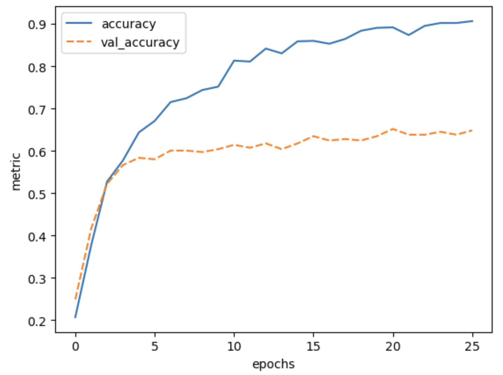

5. Transfer learning
Questions
How do I apply a pre-trained model to my data?
Objectives
Adapt a state-of-the-art pre-trained network to your own dataset
What is transfer learning?
Instead of training a model from scratch, with transfer learning you make use of models that are trained on another machine learning task. The pre-trained network captures generic knowledge during pre-training and will only be ‘fine-tuned’ to the specifics of your dataset.
An example: Let’s say that you want to train a model to classify images of different dog breeds. You could make use of a pre-trained network that learned how to classify images of dogs and cats. The pre-trained network will not know anything about different dog breeds, but it will have captured some general knowledge of, on a high-level, what dogs look like, and on a low-level all the different features (eyes, ears, paws, fur) that make up an image of a dog. Further training this model on your dog breed dataset is a much easier task than training from scratch, because the model can use the general knowledge captured in the pre-trained network.

In this episode we will learn how use Keras to adapt a state-of-the-art pre-trained model to the Dollar Street Dataset.
1. Formulate / Outline the problem
Just like in the previous episode, we use the Dollar Street 10 dataset.
We load the data in the same way as the previous episode:
import pathlib
import numpy as np
DATA_FOLDER = pathlib.Path('data/dataset_dollarstreet/') # change to location where you stored the data
train_images = np.load(DATA_FOLDER / 'train_images.npy')
val_images = np.load(DATA_FOLDER / 'test_images.npy')
train_labels = np.load(DATA_FOLDER / 'train_labels.npy')
val_labels = np.load(DATA_FOLDER / 'test_labels.npy')
2. Identify inputs and outputs
As discussed in the previous episode, the input are images of dimension 64 x 64 pixels with 3 colour channels each. The goal is to predict one out of 10 classes to which the image belongs.
3. Prepare the data
We prepare the data as before, scaling the values between 0 and 1.
train_images = train_images / 255.0
val_images = val_images / 255.0
4. Choose a pre-trained model or start building architecture from scratch
Let’s define our model input layer using the shape of our training images:
# input tensor
from tensorflow import keras
inputs = keras.Input(train_images.shape[1:])
Our images are 64 x 64 pixels, whereas the pre-trained model that we will use was trained on images of 160 x 160 pixels. To adapt our data accordingly, we add an upscale layer that resizes the images to 160 x 160 pixels during training and prediction.
# upscale layer
import tensorflow as tf
method = tf.image.ResizeMethod.BILINEAR
upscale = keras.layers.Lambda(
lambda x: tf.image.resize_with_pad(x, 160, 160, method=method))(inputs)
From the keras.applications module we use the DenseNet121 architecture.
This architecture was proposed by the paper: Densely Connected Convolutional Networks (CVPR 2017). It is trained on the Imagenet dataset, which contains 14,197,122 annotated images according to the WordNet hierarchy with over 20,000 classes.
We will have a look at the architecture later, for now it is enough to know that it is a convolutional neural network with 121 layers that was designed to work well on image classification tasks.
Let’s configure the DenseNet121:
base_model = keras.applications.DenseNet121(include_top=False,
pooling='max',
weights='imagenet',
input_tensor=upscale,
input_shape=(160,160,3),
)
SSL: certificate verify failed error
If you get the following error message: certificate verify failed: unable to get local issuer certificate,
you can download the weights of the model manually
and then load in the weights from the downloaded file:
base_model = keras.applications.DenseNet121(
include_top=False,
pooling='max',
weights='densenet121_weights_tf_dim_ordering_tf_kernels_notop.h5', # this should refer to the weights file you downloaded
input_tensor=upscale,
input_shape=(160,160,3),
)
By setting include_top to False we exclude the fully connected layer at the
top of the network, hence the final output layer. This layer was used to predict the Imagenet classes,
but will be of no use for our Dollar Street dataset.
Note that the ‘top layer’ appears at the bottom in the output of model.summary().
We add pooling='max' so that max pooling is applied to the output of the DenseNet121 network.
By setting weights='imagenet' we use the weights that resulted from training
this network on the Imagenet data.
We connect the network to the upscale layer that we defined before.
Only train a ‘head’ network
Instead of fine-tuning all the weights of the DenseNet121 network using our dataset, we choose to freeze all these weights and only train a so-called ‘head network’ that sits on top of the pre-trained network. You can see the DenseNet121 network as extracting a meaningful feature representation from our image. The head network will then be trained to decide on which of the 10 Dollar Street dataset classes the image belongs.
We will turn of the trainable property of the base model:
base_model.trainable = False
Let’s define our ‘head’ network:
out = base_model.output
out = keras.layers.Flatten()(out)
out = keras.layers.BatchNormalization()(out)
out = keras.layers.Dense(50, activation='relu')(out)
out = keras.layers.Dropout(0.5)(out)
out = keras.layers.Dense(10)(out)
Finally we define our model:
model = keras.models.Model(inputs=inputs, outputs=out)
Inspect the DenseNet121 network
Have a look at the network architecture with model.summary().
It is indeed a deep network, so expect a long summary!
1.Trainable parameters
How many parameters are there? How many of them are trainable?
Why is this and how does it effect the time it takes to train the model?
2. Head and base
Can you see in the model summary which part is the base network and which part is the head network?
3. Max pooling
Which layer is added because we provided pooling='max' as argument for DenseNet121()?
Solutions
1. Trainable parameters
Total number of parameters: 7093360, out of which only 53808 are trainable.
The 53808 trainable parameters are the weights of the head network. All other parameters are ‘frozen’ because we set base_model.trainable=False. Because only a small proportion of the parameters have to be updated at each training step, this will greatly speed up training time.
2. Head and base
The head network starts at the flatten layer, 5 layers before the final layer.
3. Max pooling
The max_pool layer right before the flatten layer is added because we provided pooling='max'.
Training and evaluating the pre-trained model
1. Compile the model
Compile the model:
Use the
adamoptimizerUse the
SparseCategoricalCrossentropyloss withfrom_logits=True.Use ‘accuracy’ as a metric.
2. Train the model
Train the model on the training dataset:
Use a batch size of 32
Train for 30 epochs, but use an earlystopper with a patience of 5
Pass the validation dataset as validation data so we can monitor performance on the validation data during training
Store the result of training in a variable called
historyTraining can take a while, it is a much larger model than what we have seen so far.
3. Inspect the results
Plot the training history and evaluate the trained model. What do you think of the results?
4. (Optional) Try out other pre-trained neural networks
Train and evaluate another pre-trained model from https://keras.io/api/applications/. How does it compare to DenseNet121?
Solution
1. Compile the model
model.compile(optimizer='adam',
loss=keras.losses.SparseCategoricalCrossentropy(from_logits=True),
metrics=['accuracy'])
2. Train the model
Define the early stopper:
early_stopper = keras.callbacks.EarlyStopping(monitor='val_accuracy',
patience=5)
Train the model:
history = model.fit(x=train_images,
y=train_labels,
batch_size=32,
epochs=30,
callbacks=[early_stopper],
validation_data=(val_images, val_labels))
3. Inspect the results
def plot_history(history, metrics):
"""
Plot the training history
Args:
history (keras History object that is returned by model.fit())
metrics(str, list): Metric or a list of metrics to plot
"""
history_df = pd.DataFrame.from_dict(history.history)
sns.lineplot(data=history_df[metrics])
plt.xlabel("epochs")
plt.ylabel("metric")
plot_history(history, ['accuracy', 'val_accuracy'])
 The final validation accuracy reaches 64%, this is a huge improvement over 30% accuracy we reached with the simple convolutional neural network that we build from scratch in the previous episode.
Concluding: The power of transfer learning
In many domains, large networks are available that have been trained on vast amounts of data, such as in computer vision and natural language processing. Using transfer learning, you can benefit from the knowledge that was captured from another machine learning task. In many fields, transfer learning will outperform models trained from scratch, especially if your dataset is small or of poor quality.
Keypoints
Large pre-trained models capture generic knowledge about a domain
Use the
keras.applicationsmodule to easily use pre-trained models for your own datasets